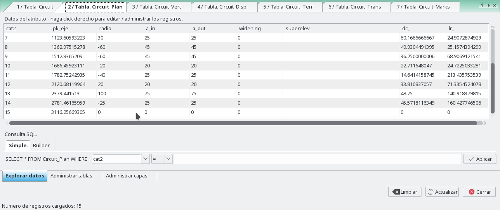
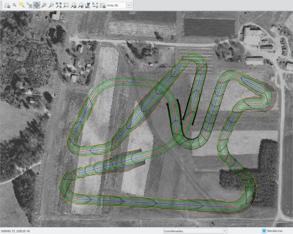

There are three options: The flag -r for run the program, The flag -p Update solution from polygon (if you modific the polygon), The flag -t Update solution from table plan (walk with dc_ and lr_)
The other options are described below.
plan write the horizontal alignment.
pks write pk marks in horizontal.
displ write the displaced platform lines in horizontal.
marks write the marks in horizontal.
pkopt define the distance between normal marks (npk), distance between principal marks (mpk), longitude of normal marks and longitude of principal marks.
areaopt write the areas defined with pairs of displaced lines.
vert write the vertical alignment in horizontal.
profile write longitudinal profile map.
With the option LPScale, the vertical scale of the longitudinal profile can be given.
The LPopt option give the longitude of marks, distance between marks in axis x and y, and distance between lines of the guitar.
cross write cross section in horizontal
sections write cross sections map.
With the option LTScale, the vertical scale of the longitudinal profile can be given.
The LTopt option give the longitude of marks, distance between marks in axis x and y, and distance between lines of the guitar.
The LTopt2 option give the number of rows of cross-section to display, distance between cross-section in axis x and y.
slopes flag write the slope soil lines calculated with the last displaced lines (perpendicular to the central axis).
sareas write the areas map with slope soil lines and the last displaced lines in horizontal.
tri write points, lines and hull area map.
The flag -a add a new table. Displ or Marks.
The flag -i insert a rows in table. List of pks for each row.
The flag -n add a new displ line, ei, a new column in displ table. You must give a start and end distances and height. And number of column and side to insert.
The flag -d del a displ line, ei, a column in displ table. A number of column and side is required.
We have six parts: plant, vertical, displaced, terrain, tranversal and marks.
The tables stored in the polygon map are:
Created with only cat column (if not exist), is for free use to add columns with information of the road.
"NameRoad"_Plan, for insert the parameters of the horizontal alignment. This layer have all vertices and nodes of the horizontal polygon. No more points can be added to this layer with the insert point option.
The columns are:
+ for clockwise
- for anticlockwise
"NameRoad"_Vert, for insert the parameters of the vertical alignment.This layer are created with the first an last vertices of the horizontal polygon. New point can be added by the flag 'e' TableTools option, or with edit gui. The added points, are inserted in the central axis referencing by pk.
The columns are:
The columns for editing by the user are:
Between two points, if the second input distance equal zero, the line will be stopped. If the second input distance equal -1, this point will not be processed and the next one will be considered.
The columns for editing by the user are:
"NameRoad"_Trans, for insert the parameters of transects to the central axis. This layer are created with the first an last vertices of the horizontal polygon. New point can be added by the flag 'e' TableTools option, or with edit gui. The added points, are inserted in the central axis referencing by pk.
The columns for editing by the user are:
"NameRoad"_Marks, for insert the parameters of Marks. This layer are created with the first an last vertex of the horizontal polygon. New point can be added by the flag 'e' TableTools option, or with edit gui. The added points, are inserted in the central axis referencing by pk.
The columns for editing by the user are:
This example is done in the North Carolina data set.
At the end of this example, there is a backup that can be executed to play with this example.
The example start creating a closed polygon with the editor, in a created map named Circuit.
After that, run the next command to get all tables in the map Circuit
v.road -r name=Circuit
For each vertex of the polygon we define a radio and in and out clothoids. So we can write the plant and pks maps.
v.road -r name=Circuit plan=plan,pks
And we obtain the map Circuit__Plant and Circuit__Pks, and their tables.
If we move some vertex of polygon we must run with the flag 'p' to update the road.
If we change some values of columns 'dc_' (long of circle) or 'lr_' (long of straight), or fill the last line (with 'dc_' and 'lr_' too, a new vertex are inserted and a new line) we must run with the flag 't' to update the road.

The distance between points of each alignments is of 1 meters by default, but this can be changed in the Interval in straights and Interval in curves options.
And now we have to set the elevation of those vertices and the kv parameter.
Now choose vertical option to get the vertical map in horizontal and the longitudinal profile, and give a DEM in the terrain option.
v.road -r name=Circuit vert=vert,profile dem=elev_lid792_1m
And we obtain the map Circuit__Vertical and Circuit__LongProfile , and their tables.
For first time, this table have two rows, who are the nodes of the polygon, and for that the first and the last points of the central axis.
The displaced lines are defined in sec_left,sec_right columns with a list separated with ";", starting from left to right in each side of the central axis. Each displaced line is defined with distance to the central axis and height to the central axis (d,h).
The mode to calculate the displaced lines is defined in the type_left,type_right columns,for each line separated by ";".
To get more vertices we have to add new rows to this table with tabletools giving the pk of the vertex.
In this example we are going to define two displaced lines in the left side to the central axis and two for right side with slope 2% to out.
The platform lines define, the lanes of a road, the platform limits, ... Those lines can be parallel to the central axis of a road (or not). If it's so, we need to know that the parallel to a clothoid is not a clothoid. Then we have two ways to do the platform lines.
In the first way, mode exact "e", we need to calculate a new displaced central axis, e.i., a parallel to the polygon not to the central axis. The new alignment or displaced line created within the new polygon have new clothoids for the transitions. To run this mode, the first and the last points, of a section of the road, must have the same displaced distance.
The widening parameter of the section above, only will be calculate in this mode, because the widening growing in the clothoid, then is applied only to the displaced lines calculated with clothoid.
The second way, mode lineal "l", we calculate the perpendicular displaced distance to each point of the central axis, to obtain a parallel to it, where the transitions won't be clothoids. Then we can't know where are the tangents of transitions. But in this mode, the displaced distance for the first and the last points don't have to be the same in a section of the road. A lineal variation will be done between those points.
For this example, the first and last are defined as lineal and the rest are in mode exact.
Into this second way, the variation don't have to be only lineal. We can define a circumference in the displaced line with the option "rR,A".
Between two points, if the second input distance equal zero, the line will be stopped. If the second input distance equal -1, this point will not be processed and the next one will be considered.
v.road -r name=Circuit plan=displ
With distance to the central axis and height of the lines we can obtain different forms, that we'll see in the cross sections.
Now we can add new lines by hand or with TableTools option.
v.road -e name=Circuit displline=add side=left ncol=3 sedist="10 -0.2; 10 -0.2"
v.road -e name=Circuit displline=add side=right ncol=3 sedist="10 -0.2; 10 -0.2"
And add new points. We are going to cut the last line in pk 900 and 1700.
v.road -e name=Circuit@road add=row tab_type=Displ pklist=876,900,1074,1690,1700,1811
Mode exact "e" in the first two lines, without widening and with widening set to 0.2.
The cut/fill are calculated with the first displaced line of the left side and the last displaced line of the right side, and with the slope given in the columns cut_left, cut_right, fill_left, fill_right.
To get more vertices we have to add new rows to this table with tabletools giving the pk of the vertex.
We can generate points of the different alignments, breaklines and a hull of all points.
v.road -r name=Circuit terr=slopes,sareas,topo dem=elev_lid792_1m
And we obtain the map Circuit__Slopes, Circuit__Slopes_Areas, Circuit__Topo and Circuit__Topo_Hull, and their tables.
In this table where we are going to define transversals 2D lines to the central axis, to obtain later, the cross sections.
This lines contains the cutoff with the displaced lines.
When this table is created, have two rows, who are the first and the last points of the central axis.
In the columns dist_left, dist_right we can define the distance left and right to the central axis and in the column npk the distance between lines.

We can obtain the transversal profiles selecting it too.
v.road -r name=Circuit trans=trans,profiles dem=elev_lid792_1m
And we obtain the map Circuit__Trans and Circuit__TransProfiles, and their tables.
With the Circuit_Topo map created, we can triangulate with triangle or delaunay, and obtain the curves.
In this example we must delete the points that cross the road, for a good triangulation. We can run this.
v.edit map=Circuit__Topo type=point tool=delete ids=0-999999 where="pk > 876 AND pk < 1074"
v.edit map=Circuit__Topo type=point tool=delete ids=0-999999 where="pk > 1690 AND pk < 1811"
db.execute sql="DELETE FROM Circuit__Topo WHERE pk > 876 and pk < 1074"
db.execute sql="DELETE FROM Circuit__Topo WHERE pk > 1690 and pk < 1811"
And obtain the Circuit__Topo like this. The hull must be changed too.
v.road -o name=Circuit dem=elev_lid792_1m topotools=delaunay,curved,cut_hull
And we obtain the map Circuit__Topo_Tin and Circuit__Topo_Curves, and their tables.

After run the backup you can run this to obtain all maps.
v.road -r name=Circuit plan=plan,pks,displ,marks vert=vert,profile trans=trans,profiles terr=slopes,sareas,topo dem=elev_lid792_1m
echo "L 15 1
638602.453907 220281.587467
638872.438983 220266.927644
638731.321851 220395.256912
638781.230311 220495.669832
638890.64791 220489.728605
638750.420421 220565.326292
638662.05161 220298.095029
638632.866458 220535.678384
638483.222668 220543.750924
638406.451001 220388.023737
638502.195923 220398.284828
638721.795144 220655.135048
638656.193203 220404.828666
638268.15133 220299.739643
638602.453907 220281.587467
1 1
P 1 1
638602.453907 220281.587467
2 1
P 1 1
638872.438983 220266.927644
2 2
P 1 1
638731.321851 220395.256912
2 3
P 1 1
638781.230311 220495.669832
2 4
P 1 1
638890.64791 220489.728605
2 5
P 1 1
638750.420421 220565.326292
2 6
P 1 1
638662.05161 220298.095029
2 7
P 1 1
638632.866458 220535.678384
2 8
P 1 1
638483.222668 220543.750924
2 9
P 1 1
638406.451001 220388.023737
2 10
P 1 1
638502.195923 220398.284828
2 11
P 1 1
638721.795144 220655.135048
2 12
P 1 1
638656.193203 220404.828666
2 13
P 1 1
638268.15133 220299.739643
2 14
P 1 1
638602.453907 220281.587467
2 15
P 1 1
638602.453907 220281.587467
8 1
P 1 1
638602.453907 220281.587467
8 2
P 1 1
638602.453907 220281.587467
4 1
P 1 1
638634.426432 220500.061126
4 2
P 1 1
638621.330858 220519.982685
4 3
P 1 1
638465.368943 220506.786855
4 4
P 1 1
638666.507984 220451.258691
4 5
P 1 1
638662.328095 220442.177014
4 6
P 1 1
638573.410617 220382.409616
4 7
P 1 1
638602.453907 220281.587467
4 8
P 1 1
638602.453907 220281.587467
3 1
P 1 1
638794.637722 220294.628116
3 2
P 1 1
638791.485541 220543.187779
3 3
P 1 1
638641.56261 220464.886873
3 4
P 1 1
638621.266312 220399.660839
3 5
P 1 1
638406.371565 220315.000175
3 6
P 1 1
638602.453907 220281.587467
3 7
P 1 1
638602.453907 220281.587467
7 1
P 1 1
638634.610948 220499.596419
7 2
P 1 1
638465.368943 220506.786855
7 3
P 1 1
638666.507984 220451.258691
7 4
P 1 1
638654.577521 220429.350321
7 5
P 1 1
638637.711356 220410.985026
7 6
P 1 1
638616.836773 220397.342402
7 7
P 1 1
638593.594427 220388.201219
7 8
P 1 1
638573.410617 220382.409616
7 9
P 1 1
638602.453907 220281.587467
7 10
P 1 1
638602.453907 220281.587467
5 1
P 1 1
638693.765832 220585.688009
5 2
P 1 1
638691.041172 220537.792247
5 3
P 1 1
638535.766657 220372.214897
5 4
P 1 1
638602.453907 220281.587467
5 5
P 1 1
638602.453907 220281.587467
6 1
P 1 1
638602.453907 220281.587467
6 2
" | v.in.ascii -n input=- output=Circuit format=standard --o
v.db.addtable map=Circuit table=Circuit_Plan layer=2 key=cat2 columns="pk_eje double precision,radio double precision,a_in double precision,a_out double precision,widening double precision,superelev varchar(25),dc_ double precision,lr_ double precision"
v.db.addtable map=Circuit table=Circuit_Displ layer=8 key=cat8 columns="pk double precision,sec_left varchar(25),sec_right varchar(25),type_left varchar(25),type_right varchar(25)"
v.db.addtable map=Circuit table=Circuit_Displ layer=4 key=cat4 columns="pk double precision,sec_left varchar(25),sec_right varchar(25),type_left varchar(25),type_right varchar(25)"
v.db.addtable map=Circuit table=Circuit_Vert layer=3 key=cat3 columns="pk double precision,elev double precision,kv double precision,l double precision,b double precision"
v.db.addtable map=Circuit table=Circuit_Marks layer=7 key=cat7 columns="pk double precision,dist varchar(25),elev varchar(25),azi varchar(25),name varchar(25),cod varchar(25)"
v.db.addtable map=Circuit table=Circuit_Terr layer=5 key=cat5 columns="pk double precision,cut_left double precision,cut_right double precision,fill_left double precision,fill_right double precision,height double precision,leng double precision"
v.db.addtable map=Circuit table=Circuit_Trans layer=6 key=cat6 columns="pk double precision,dist_left double precision,dist_right double precision,npk double precision"
v.db.addtable map=Circuit table=Circuit layer=1 key=cat columns="name varchar(25)"
echo "UPDATE Circuit_Plan SET pk_eje='0.0',radio='0.0',a_in='0.0',a_out='0.0',widening='0.0',superelev='',dc_='0.0',lr_='140.002162531' WHERE cat2=1;
UPDATE Circuit_Plan SET pk_eje='270.382786955',radio='-40.0',a_in='35.0',a_out='35.0',widening='0.0',superelev='',dc_='67.689561716',lr_='18.521314174' WHERE cat2=2;
UPDATE Circuit_Plan SET pk_eje='461.124617255',radio='40.0',a_in='30.0',a_out='30.0',widening='0.0',superelev='',dc_='29.2637172691',lr_='39.7863972502' WHERE cat2=3;
UPDATE Circuit_Plan SET pk_eje='573.256721368',radio='30.0',a_in='25.0',a_out='25.0',widening='0.0',superelev='',dc_='14.0798000021',lr_='1.81890329525' WHERE cat2=4;
UPDATE Circuit_Plan SET pk_eje='682.835501948',radio='-15.0',a_in='15.0',a_out='15.0',widening='0.0',superelev='',dc_='25.5209406839',lr_='47.3026773599' WHERE cat2=5;
UPDATE Circuit_Plan SET pk_eje='842.142623261',radio='-20.0',a_in='20.0',a_out='20.0',widening='0.0',superelev='',dc_='14.9175006172',lr_='100.00718402' WHERE cat2=6;
UPDATE Circuit_Plan SET pk_eje='1123.60593223',radio='30.0',a_in='25.0',a_out='25.0',widening='0.0',superelev='',dc_='60.1666666667',lr_='24.9072874929' WHERE cat2=7;
UPDATE Circuit_Plan SET pk_eje='1362.97515278',radio='-60.0',a_in='45.0',a_out='45.0',widening='0.0',superelev='',dc_='49.9304491395',lr_='25.1574394299' WHERE cat2=8;
UPDATE Circuit_Plan SET pk_eje='1512.8365209',radio='-60.0',a_in='45.0',a_out='45.0',widening='0.0',superelev='',dc_='36.2500000006',lr_='68.9069121541' WHERE cat2=9;
UPDATE Circuit_Plan SET pk_eje='1686.45923111',radio='-20.0',a_in='20.0',a_out='20.0',widening='0.0',superelev='',dc_='22.711648047',lr_='24.7225033281' WHERE cat2=10;
UPDATE Circuit_Plan SET pk_eje='1782.75242935',radio='-40.0',a_in='25.0',a_out='25.0',widening='0.0',superelev='',dc_='14.6414158745',lr_='213.435753539' WHERE cat2=11;
UPDATE Circuit_Plan SET pk_eje='2120.68119964',radio='20.0',a_in='20.0',a_out='20.0',widening='0.0',superelev='',dc_='33.810837057',lr_='71.3354524078' WHERE cat2=12;
UPDATE Circuit_Plan SET pk_eje='2379.441513',radio='100.0',a_in='75.0',a_out='75.0',widening='0.0',superelev='',dc_='48.75',lr_='140.918379815' WHERE cat2=13;
UPDATE Circuit_Plan SET pk_eje='2781.46165959',radio='-25.0',a_in='25.0',a_out='25.0',widening='0.0',superelev='',dc_='45.5718116349',lr_='160.427746506' WHERE cat2=14;
UPDATE Circuit_Plan SET pk_eje='3116.25669305',radio='0.0',a_in='0.0',a_out='0.0',widening='0.0',superelev='',dc_='0.0',lr_='0.0' WHERE cat2=15;
UPDATE Circuit_Displ SET pk='0.0',sec_left='6 0;3.5 0',sec_right='3.5 0;6 0',type_left='',type_right='' WHERE cat8=1;
UPDATE Circuit_Displ SET pk='2208.88779535',sec_left='6 0;3.5 0',sec_right='3.5 0;6 0',type_left='',type_right='' WHERE cat8=2;
UPDATE Circuit_Displ SET pk='0.0',sec_left='10 -0.34;8 -0.19;6.5 -0.13;4 -0.08',sec_right='4 -0.08;6.5 -0.13;8 -0.19;10 -0.34',type_left='l;l;e;e',type_right='e;e;l;l' WHERE cat4=1;
UPDATE Circuit_Displ SET pk='876.0',sec_left='10 -0.34;-1 0;-1 0;-1 0',sec_right='-1 0;-1 0;-1 0;10 -0.34',type_left='l;l;l;l',type_right='l;l;l;l' WHERE cat4=2;
UPDATE Circuit_Displ SET pk='900.0',sec_left='0 0;-1 0;-1 0;-1 0',sec_right='-1 0;-1 0;-1 0;0 0',type_left='l;l;l;l',type_right='l;l;l;l' WHERE cat4=3;
UPDATE Circuit_Displ SET pk='1074.0',sec_left='10 -0.34;-1 0;-1 0;-1 0',sec_right='-1 0;-1 0;-1 0;10 -0.34',type_left='l;l;l;l',type_right='l;l;l;l' WHERE cat4=4;
UPDATE Circuit_Displ SET pk='1690.0',sec_left='10 -0.34;-1 0;-1 0;-1 0',sec_right='-1 0;-1 0;-1 0;10 -0.34',type_left='l;l;l;l',type_right='l;l;l;l' WHERE cat4=5;
UPDATE Circuit_Displ SET pk='1700.0',sec_left='0 0;-1 0;-1 0;-1 0',sec_right='-1 0;-1 0;-1 0;0 0',type_left='l;l;l;l',type_right='l;l;l;l' WHERE cat4=6;
UPDATE Circuit_Displ SET pk='1811.0',sec_left='10 -0.34;-1 0;-1 0;-1 0',sec_right='-1 0;-1 0;-1 0;10 -0.34',type_left='l;l;l;l',type_right='l;l;l;l' WHERE cat4=7;
UPDATE Circuit_Displ SET pk='2208.88779535',sec_left=' 10 -0.34;8 -0.19;6.5 -0.13;4 -0.08',sec_right='4 -0.08;6.5 -0.13;8 -0.19; 10 -0.34',type_left='l;l;l;l',type_right='l;l;l;l' WHERE cat4=8;
UPDATE Circuit_Vert SET pk='0.0',elev='118.0',kv='0.0',l='0.0',b='0.0' WHERE cat3=1;
UPDATE Circuit_Vert SET pk='200.0',elev='116.0',kv='-2500.0',l='0.0',b='0.0' WHERE cat3=2;
UPDATE Circuit_Vert SET pk='550.0',elev='133.0',kv='3000.0',l='0.0',b='0.0' WHERE cat3=3;
UPDATE Circuit_Vert SET pk='840.0',elev='114.0',kv='-2000.0',l='0.0',b='0.0' WHERE cat3=4;
UPDATE Circuit_Vert SET pk='1760.0',elev='133.0',kv='3000.0',l='0.0',b='0.0' WHERE cat3=5;
UPDATE Circuit_Vert SET pk='2000.0',elev='121.0',kv='-2000.0',l='0.0',b='0.0' WHERE cat3=6;
UPDATE Circuit_Vert SET pk='2208.88779535',elev='118.0',kv='0.0',l='0.0',b='0.0' WHERE cat3=7;
UPDATE Circuit_Marks SET pk='0.0',dist='',elev='',azi='',name='',cod='' WHERE cat7=1;
UPDATE Circuit_Marks SET pk='875.5',dist='0',elev='0',azi='1',name='Bridge1',cod='a1' WHERE cat7=2;
UPDATE Circuit_Marks SET pk='1074.0',dist='0',elev='0',azi='-1',name='Bridge2',cod='a1' WHERE cat7=3;
UPDATE Circuit_Marks SET pk='1690.0',dist='0',elev='0',azi='1',name='Tunel1',cod='a2' WHERE cat7=4;
UPDATE Circuit_Marks SET pk='1715.0',dist='0',elev='0',azi='1',name='Pila',cod='' WHERE cat7=5;
UPDATE Circuit_Marks SET pk='1740.0',dist='0',elev='0',azi='1',name='Pila',cod='' WHERE cat7=6;
UPDATE Circuit_Marks SET pk='1765.0',dist='0',elev='0',azi='1',name='Pila',cod='' WHERE cat7=7;
UPDATE Circuit_Marks SET pk='1790.0',dist='0',elev='0',azi='1',name='Pila',cod='' WHERE cat7=8;
UPDATE Circuit_Marks SET pk='1811.0',dist='0',elev='0',azi='-1',name='Tunel2',cod='a2' WHERE cat7=9;
UPDATE Circuit_Marks SET pk='2208.88779535',dist='',elev='',azi='',name='',cod='' WHERE cat7=10;
UPDATE Circuit_Terr SET pk='0.0',cut_left='2.0',cut_right='2.0',fill_left='0.5',fill_right='0.5',height='0.0',leng='0.0' WHERE cat5=1;
UPDATE Circuit_Terr SET pk='1550.0',cut_left='2.0',cut_right='2.0',fill_left='0.5',fill_right='0.5',height='0.0',leng='0.0' WHERE cat5=2;
UPDATE Circuit_Terr SET pk='1600.0',cut_left='2.0',cut_right='2.0',fill_left='4.0',fill_right='4.0',height='0.0',leng='0.0' WHERE cat5=3;
UPDATE Circuit_Terr SET pk='1850.0',cut_left='2.0',cut_right='2.0',fill_left='0.5',fill_right='0.5',height='0.0',leng='0.0' WHERE cat5=4;
UPDATE Circuit_Terr SET pk='2208.88779535',cut_left='2.0',cut_right='2.0',fill_left='0.5',fill_right='0.5',height='0.0',leng='0.0' WHERE cat5=5;
UPDATE Circuit_Trans SET pk='0.0',dist_left='20.0',dist_right='20.0',npk='20.0' WHERE cat6=1;
UPDATE Circuit_Trans SET pk='2208.88779535',dist_left='20.0',dist_right='20.0',npk='20.0' WHERE cat6=2;
UPDATE Circuit SET name='Circuit' WHERE cat=1;
" | db.execute input=-